Object-Oriented Programming in Java
Lab report: Labs 1–10, design pattern demonstrations, and the Library Management System mini-project.
Verification passed: all 50 exercises ran successfully, Java 17 compilation passed, and boundary, error-handling and library persistence checks passed.
All outputs below come from actual Java executions. Images are rendered console-output captures, not desktop screenshots. Source code is linked for each exercise and includes explanations.
Lab 1
Exercise 1: CarBasics
Objective: Create and display three independent car objects.
Java source · Execution transcript
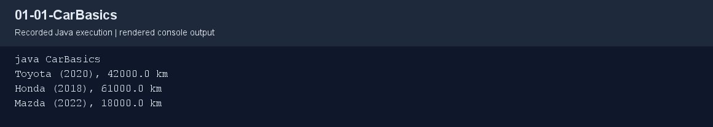
Conclusion: Objects carry their own state and behaviour.
Source code
/** Lab 1, Exercise 1: state and behaviour belong to each Car object. */
public class CarBasics {
static class Car {
String brand;
int year;
double mileage;
Car(String brand, int year, double mileage) {
this.brand = brand;
this.year = year;
this.mileage = mileage;
}
void display() {
System.out.printf("%s (%d), %.1f km%n", brand, year, mileage);
}
}
public static void main(String[] args) {
// EXPLAIN: each new expression creates a separate object.
Car[] cars = {
new Car("Toyota", 2020, 42_000),
new Car("Honda", 2018, 61_000),
new Car("Mazda", 2022, 18_000)
};
for (Car car : cars) {
car.display();
}
}
}
Exercise 2: CarAntique
Objective: Identify cars older than 25 years.
Java source · Execution transcript
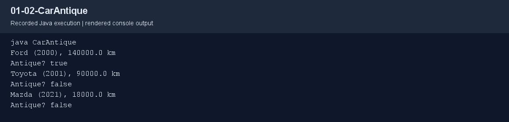
Conclusion: The strict greater-than comparison excludes a car exactly 25 years old.
Source code
import java.time.Year;
/** Lab 1, Exercise 2: determine whether a car is more than 25 years old. */
public class CarAntique {
static class Car {
String brand;
int year;
double mileage;
Car(String brand, int year, double mileage) {
this.brand = brand;
this.year = year;
this.mileage = mileage;
}
void display() {
System.out.printf("%s (%d), %.1f km%n", brand, year, mileage);
}
boolean isAntique() {
// EXPLAIN: exactly 25 years old does not satisfy "more than 25".
return Year.now().getValue() - year > 25;
}
}
public static void main(String[] args) {
int currentYear = Year.now().getValue();
Car[] cars = {
new Car("Ford", currentYear - 26, 140_000),
new Car("Toyota", currentYear - 25, 90_000),
new Car("Mazda", currentYear - 5, 18_000)
};
for (Car car : cars) {
car.display();
System.out.println("Antique? " + car.isAntique());
}
}
}
Exercise 3: LargestRectangle
Objective: Find the greatest area among five rectangles.
Java source · Execution transcript
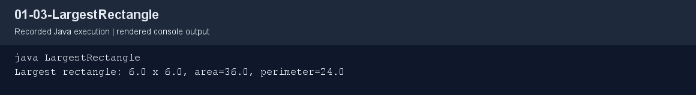
Conclusion: Comparing calculated areas identifies the 6 by 6 rectangle.
Source code
/** Lab 1, Exercise 3: compare the areas of five Rectangle objects. */
public class LargestRectangle {
static class Rectangle {
double width;
double height;
Rectangle(double width, double height) {
this.width = width;
this.height = height;
}
double area() {
return width * height;
}
double perimeter() {
return 2 * (width + height);
}
@Override
public String toString() {
return String.format("%.1f x %.1f, area=%.1f, perimeter=%.1f",
width, height, area(), perimeter());
}
}
public static void main(String[] args) {
Rectangle[] rectangles = {
new Rectangle(2, 4), new Rectangle(5, 3), new Rectangle(6, 6),
new Rectangle(8, 2), new Rectangle(4, 4)
};
Rectangle largest = rectangles[0];
for (Rectangle rectangle : rectangles) {
if (rectangle.area() > largest.area()) {
largest = rectangle;
}
}
System.out.println("Largest rectangle: " + largest);
}
}
Exercise 4: RectangleAliasing
Objective: Predict and verify reference aliasing.
Java source · Execution transcript
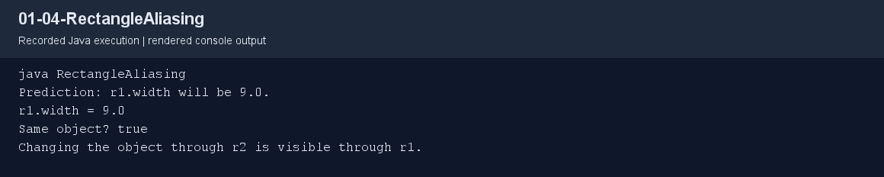
Conclusion: Changing r2.width also changes r1.width because both references identify one object.
Source code
/** Lab 1, Exercise 4: assigning a reference creates an alias. */
public class RectangleAliasing {
static class Rectangle {
double width;
double height;
Rectangle(double width, double height) {
this.width = width;
this.height = height;
}
}
public static void main(String[] args) {
System.out.println("Prediction: r1.width will be 9.0.");
Rectangle r1 = new Rectangle(4, 5);
Rectangle r2 = r1;
// EXPLAIN: both variables point to the same object on the heap.
r2.width = 9;
System.out.println("r1.width = " + r1.width);
System.out.println("Same object? " + (r1 == r2));
System.out.println("Changing the object through r2 is visible through r1.");
}
}
Exercise 5: PersonAddress
Objective: Demonstrate composition, chained access and null.
Java source · Execution transcript
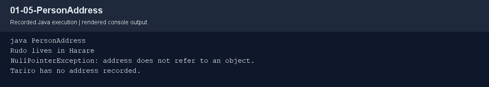
Conclusion: A chained expression requires every intermediate reference to be non-null.
Source code
/** Lab 1, Exercise 5: composition, chained access and null. */
public class PersonAddress {
static class Address {
String city;
Address(String city) {
this.city = city;
}
}
static class Person {
String name;
Address address;
Person(String name, Address address) {
this.name = name;
this.address = address;
}
}
public static void main(String[] args) {
Person person = new Person("Rudo", new Address("Harare"));
// EXPLAIN: person -> address object -> city field.
System.out.println(person.name + " lives in " + person.address.city);
Person noAddress = new Person("Tariro", null);
try {
// Deliberately demonstrate the failure requested by the exercise.
System.out.println(noAddress.address.city);
} catch (NullPointerException exception) {
System.out.println("NullPointerException: address does not refer to an object.");
}
// EXPLAIN: guard a nullable reference before using it in normal code.
if (noAddress.address == null) {
System.out.println(noAddress.name + " has no address recorded.");
}
}
}
Lab 2
Exercise 1: CircleConstructors
Objective: Use overloaded constructors with a default radius.
Java source · Execution transcript
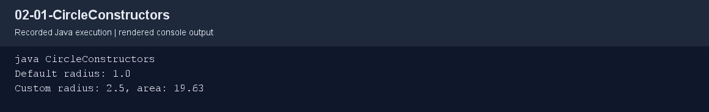
Conclusion: The no-argument constructor delegates to the radius constructor.
Source code
/** Lab 2, Exercise 1: overloaded constructors and this(...). */
public class CircleConstructors {
static class Circle {
private final double radius;
Circle() {
this(1.0);
}
Circle(double radius) {
if (!Double.isFinite(radius) || radius <= 0) {
throw new IllegalArgumentException("Radius must be finite and positive");
}
this.radius = radius;
}
double getRadius() {
return radius;
}
double area() {
return Math.PI * radius * radius;
}
}
public static void main(String[] args) {
Circle defaultCircle = new Circle();
Circle customCircle = new Circle(2.5);
System.out.println("Default radius: " + defaultCircle.getRadius());
System.out.printf("Custom radius: %.1f, area: %.2f%n",
customCircle.getRadius(), customCircle.area());
}
}
Exercise 2: CircleCounter
Objective: Count successful circle constructions with static state.
Java source · Execution transcript
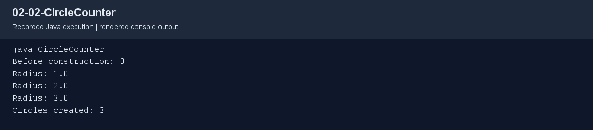
Conclusion: The static field belongs to the class and constructor chaining increments it once.
Source code
/** Lab 2, Exercise 2: one static counter is shared by every instance. */
public class CircleCounter {
static class Circle {
private static int count;
private final double radius;
Circle() {
this(1.0);
}
Circle(double radius) {
if (!Double.isFinite(radius) || radius <= 0) {
throw new IllegalArgumentException("Radius must be finite and positive");
}
this.radius = radius;
// EXPLAIN: constructor chaining increments once per successful creation.
count++;
}
static int getCount() {
return count;
}
double getRadius() {
return radius;
}
}
public static void main(String[] args) {
System.out.println("Before construction: " + Circle.getCount());
Circle[] circles = {new Circle(), new Circle(2), new Circle(3)};
for (Circle circle : circles) {
System.out.println("Radius: " + circle.getRadius());
}
System.out.println("Circles created: " + Circle.getCount());
// Counts successful constructions, not garbage-collector liveness.
}
}
Exercise 3: EmployeeConstructors
Objective: Overload employee constructors and copy data into a new identity.
Java source · Execution transcript
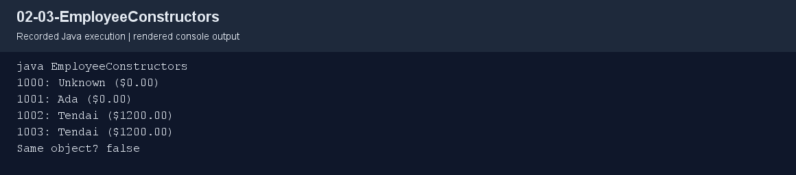
Conclusion: The copy has equivalent employee data but receives a new object and employee ID.
Source code
/** Lab 2, Exercise 3: overloaded constructors, unique IDs and copying. */
public class EmployeeConstructors {
static class Employee {
private static int nextId = 1000;
private final int employeeId;
private final String name;
private final double salary;
Employee() {
this("Unknown", 0);
}
Employee(String name) {
this(name, 0);
}
Employee(String name, double salary) {
if (name == null || name.isBlank()) {
throw new IllegalArgumentException("Name is required");
}
if (!Double.isFinite(salary) || salary < 0) {
throw new IllegalArgumentException("Salary must be finite and nonnegative");
}
this.employeeId = nextId++;
this.name = name;
this.salary = salary;
}
Employee(Employee other) {
// EXPLAIN: same data, new object and new employee identity.
this(other.name, other.salary);
}
@Override
public String toString() {
return String.format("%d: %s ($%.2f)", employeeId, name, salary);
}
}
public static void main(String[] args) {
Employee unnamed = new Employee();
Employee named = new Employee("Ada");
Employee original = new Employee("Tendai", 1200);
Employee copy = new Employee(original);
System.out.println(unnamed);
System.out.println(named);
System.out.println(original);
System.out.println(copy);
System.out.println("Same object? " + (original == copy));
}
}
Exercise 4: InitialisationOrder
Objective: Predict and trace static and instance blocks.
Java source · Execution transcript
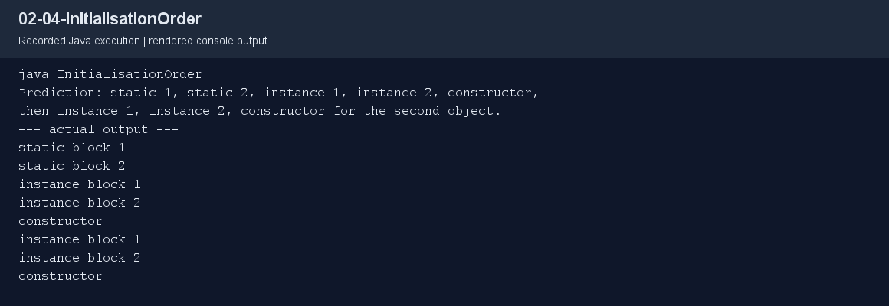
Conclusion: Static blocks execute once in declaration order; instance blocks execute before each constructor.
Source code
/** Lab 2, Exercise 4: static blocks run once; instance blocks run per object. */
public class InitialisationOrder {
static class Initialisation {
static {
System.out.println("static block 1");
}
static {
System.out.println("static block 2");
}
{
System.out.println("instance block 1");
}
{
System.out.println("instance block 2");
}
Initialisation() {
System.out.println("constructor");
}
}
public static void main(String[] args) {
System.out.println("Prediction: static 1, static 2, instance 1, instance 2, constructor,");
System.out.println("then instance 1, instance 2, constructor for the second object.");
System.out.println("--- actual output ---");
new Initialisation();
new Initialisation();
}
}
Exercise 5: TemperatureFactories
Objective: Use named static factories and a private constructor.
Java source · Execution transcript
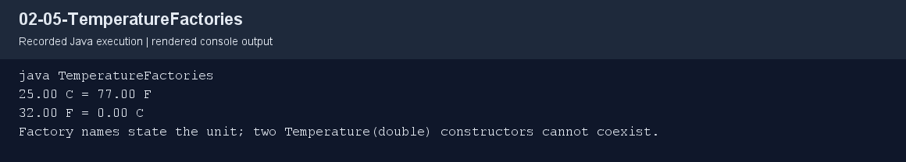
Conclusion: Factory method names distinguish Celsius from Fahrenheit without ambiguous signatures.
Source code
/** Lab 2, Exercise 5: named factories make the input unit explicit. */
public class TemperatureFactories {
static final class Temperature {
private final double celsius;
private Temperature(double celsius) {
if (!Double.isFinite(celsius) || celsius < -273.15) {
throw new IllegalArgumentException("Temperature must be finite and at least -273.15 C");
}
this.celsius = celsius;
}
static Temperature fromCelsius(double celsius) {
return new Temperature(celsius);
}
static Temperature fromFahrenheit(double fahrenheit) {
return new Temperature((fahrenheit - 32) * 5 / 9);
}
double getCelsius() {
return celsius;
}
double getFahrenheit() {
return celsius * 9 / 5 + 32;
}
}
public static void main(String[] args) {
Temperature warm = Temperature.fromCelsius(25);
Temperature freezing = Temperature.fromFahrenheit(32);
System.out.printf("%.2f C = %.2f F%n", warm.getCelsius(), warm.getFahrenheit());
System.out.printf("32.00 F = %.2f C%n", freezing.getCelsius());
System.out.println("Factory names state the unit; two Temperature(double) constructors cannot coexist.");
}
}
Lab 3
Exercise 1: ValidatedStudent
Objective: Reject invalid marks through setters.
Java source · Execution transcript
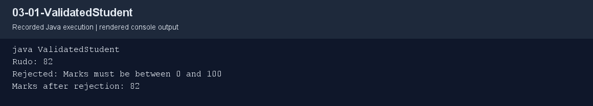
Conclusion: Validation keeps the previous valid state intact after a failed update.
Source code
/** Lab 3, Exercise 1: private state is changed through validated setters. */
public class ValidatedStudent {
static class Student {
private String name;
private int marks;
Student(String name, int marks) {
setName(name);
setMarks(marks);
}
public void setName(String name) {
if (name == null || name.isBlank()) {
throw new IllegalArgumentException("Name is required");
}
this.name = name.trim();
}
public void setMarks(int marks) {
if (marks < 0 || marks > 100) {
throw new IllegalArgumentException("Marks must be between 0 and 100");
}
this.marks = marks;
}
public String getName() {
return name;
}
public int getMarks() {
return marks;
}
}
public static void main(String[] args) {
Student student = new Student("Rudo", 82);
System.out.println(student.getName() + ": " + student.getMarks());
try {
student.setMarks(120);
} catch (IllegalArgumentException exception) {
System.out.println("Rejected: " + exception.getMessage());
}
System.out.println("Marks after rejection: " + student.getMarks());
}
}
Exercise 2: StudentGrades
Objective: Compute A, B, C or F from marks.
Java source · Execution transcript
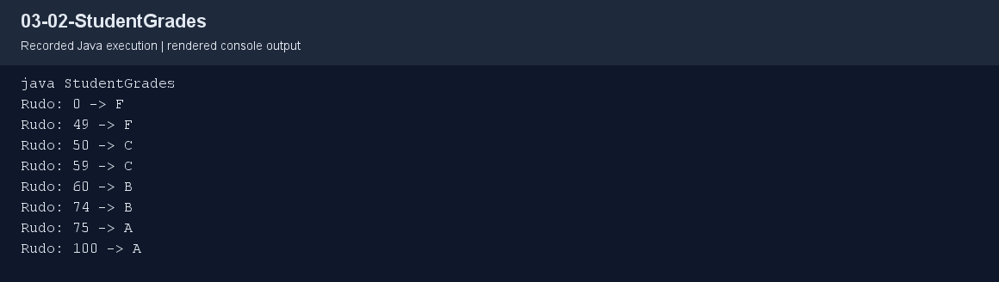
Conclusion: The grade is derived from marks and cannot become stale.
Source code
/** Lab 3, Exercise 2: calculate a grade from marks instead of storing it. */
public class StudentGrades {
static class Student {
private final String name;
private int marks;
Student(String name, int marks) {
if (name == null || name.isBlank()) {
throw new IllegalArgumentException("Name is required");
}
this.name = name;
setMarks(marks);
}
public String getName() {
return name;
}
public int getMarks() {
return marks;
}
public void setMarks(int marks) {
if (marks < 0 || marks > 100) {
throw new IllegalArgumentException("Marks must be between 0 and 100");
}
this.marks = marks;
}
public String getGrade() {
// Assumption: A >= 75, B >= 60, C >= 50, otherwise F.
if (marks >= 75) return "A";
if (marks >= 60) return "B";
if (marks >= 50) return "C";
return "F";
}
}
public static void main(String[] args) {
Student student = new Student("Rudo", 0);
for (int marks : new int[]{0, 49, 50, 59, 60, 74, 75, 100}) {
student.setMarks(marks);
System.out.println(student.getName() + ": " + student.getMarks()
+ " -> " + student.getGrade());
}
}
}
Exercise 3: BankAccountHistory
Objective: Expose an unmodifiable transaction snapshot.
Java source · Execution transcript
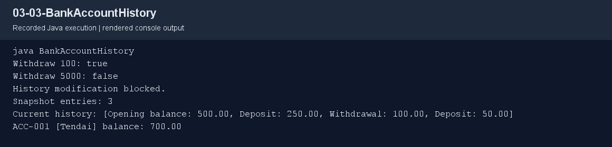
Conclusion: List.copyOf prevents both external modification and later changes to a returned snapshot.
Source code
import java.util.ArrayList;
import java.util.List;
/** Lab 3, Exercise 3: extend BankAccount with a protected history snapshot. */
public class BankAccountHistory {
static class BankAccount {
private final String accountNumber;
private String ownerName;
private double balance;
private final List<String> history = new ArrayList<>();
BankAccount(String accountNumber, String ownerName, double openingBalance) {
if (accountNumber == null || accountNumber.isBlank()) {
throw new IllegalArgumentException("Account number is required");
}
if (!Double.isFinite(openingBalance) || openingBalance < 0) {
throw new IllegalArgumentException("Opening balance must be finite and nonnegative");
}
this.accountNumber = accountNumber;
setOwnerName(ownerName);
this.balance = openingBalance;
history.add(String.format("Opening balance: %.2f", openingBalance));
}
public String getAccountNumber() { return accountNumber; }
public String getOwnerName() { return ownerName; }
public double getBalance() { return balance; }
public void setOwnerName(String ownerName) {
if (ownerName == null || ownerName.isBlank()) {
throw new IllegalArgumentException("Owner name is required");
}
this.ownerName = ownerName.trim();
}
public void deposit(double amount) {
requirePositive(amount);
if (!Double.isFinite(balance + amount)) {
throw new IllegalArgumentException("Resulting balance is too large");
}
balance += amount;
history.add(String.format("Deposit: %.2f", amount));
}
public boolean withdraw(double amount) {
requirePositive(amount);
if (amount > balance) return false;
balance -= amount;
history.add(String.format("Withdrawal: %.2f", amount));
return true;
}
private static void requirePositive(double amount) {
if (!Double.isFinite(amount) || amount <= 0) {
throw new IllegalArgumentException("Amount must be finite and positive");
}
}
public List<String> getTransactionHistory() {
// EXPLAIN: a snapshot cannot be modified or changed by later transactions.
return List.copyOf(history);
}
@Override
public String toString() {
return String.format("%s [%s] balance: %.2f", accountNumber, ownerName, balance);
}
}
public static void main(String[] args) {
BankAccount account = new BankAccount("ACC-001", "Tendai", 500);
account.deposit(250);
System.out.println("Withdraw 100: " + account.withdraw(100));
System.out.println("Withdraw 5000: " + account.withdraw(5000));
List<String> snapshot = account.getTransactionHistory();
try {
snapshot.clear();
} catch (UnsupportedOperationException exception) {
System.out.println("History modification blocked.");
}
account.deposit(50);
System.out.println("Snapshot entries: " + snapshot.size());
System.out.println("Current history: " + account.getTransactionHistory());
System.out.println(account);
}
}
Exercise 4: ImmutablePerson
Objective: Create a final class with private final fields and no setters.
Java source · Execution transcript
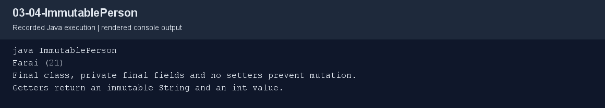
Conclusion: The actual ImmutablePerson class now enforces the requested immutable design.
Source code
/** Lab 3, Exercise 4: an immutable object cannot change after construction. */
// EXPLAIN: final prevents a subclass from adding mutable behaviour.
public final class ImmutablePerson {
private final String name;
private final int age;
public ImmutablePerson(String name, int age) {
if (name == null || name.isBlank()) {
throw new IllegalArgumentException("Name is required");
}
if (age < 0 || age > 120) {
throw new IllegalArgumentException("Age must be between 0 and 120");
}
this.name = name.trim();
this.age = age;
}
// EXPLAIN: private final fields are assigned once; getters expose values only.
public String getName() { return name; }
public int getAge() { return age; }
// String is immutable and int is a value, so defensive copies are unnecessary.
@Override
public String toString() {
return name + " (" + age + ")";
}
public static void main(String[] args) {
ImmutablePerson person = new ImmutablePerson("Farai", 21);
System.out.println(person);
System.out.println("Final class, private final fields and no setters prevent mutation.");
System.out.println("Getters return an immutable String and an int value.");
}
}
Exercise 5: KelvinTemperature
Objective: Hide kelvin storage behind conversion methods.
Java source · Execution transcript
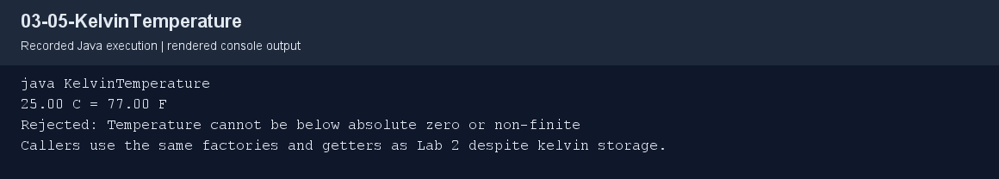
Conclusion: The public factories and getters stay usable even when the internal unit changes.
Source code
/** Lab 3, Exercise 5: hide the storage unit behind a stable public interface. */
public class KelvinTemperature {
static final class Temperature {
private final double kelvin;
private Temperature(double kelvin) {
if (!Double.isFinite(kelvin) || kelvin < 0) {
throw new IllegalArgumentException("Temperature cannot be below absolute zero or non-finite");
}
this.kelvin = kelvin;
}
public static Temperature fromCelsius(double celsius) {
return new Temperature(celsius + 273.15);
}
public static Temperature fromFahrenheit(double fahrenheit) {
return fromCelsius((fahrenheit - 32) * 5 / 9);
}
public double getCelsius() {
return kelvin - 273.15;
}
public double getFahrenheit() {
return getCelsius() * 9 / 5 + 32;
}
}
public static void main(String[] args) {
Temperature temperature = Temperature.fromCelsius(25);
System.out.printf("%.2f C = %.2f F%n",
temperature.getCelsius(), temperature.getFahrenheit());
try {
Temperature.fromCelsius(-274);
} catch (IllegalArgumentException exception) {
System.out.println("Rejected: " + exception.getMessage());
}
System.out.println("Callers use the same factories and getters as Lab 2 despite kelvin storage.");
}
}
Lab 4
Exercise 1: PersonStudent
Objective: Reuse Person.display from Student.
Java source · Execution transcript
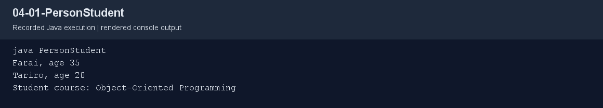
Conclusion: An inherited method prints the common name and age; the subclass adds course state.
Source code
/** Lab 4, Exercise 1: a Student inherits the Person display method. */
public class PersonStudent {
static class Person {
private final String name;
private final int age;
Person(String name, int age) {
this.name = name;
this.age = age;
}
public void display() {
System.out.println(name + ", age " + age);
}
}
static class Student extends Person {
private final String course;
Student(String name, int age, String course) {
super(name, age);
this.course = course;
}
public String getCourse() {
return course;
}
}
public static void main(String[] args) {
Person person = new Person("Farai", 35);
Student student = new Student("Tariro", 20, "Object-Oriented Programming");
person.display();
student.display(); // EXPLAIN: display is inherited without being rewritten.
System.out.println("Student course: " + student.getCourse());
}
}
Exercise 2: PersonTeacher
Objective: Share Person code between Student and Teacher.
Java source · Execution transcript
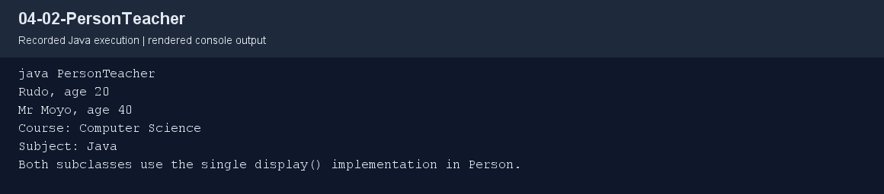
Conclusion: Both subclasses inherit one display implementation.
Source code
/** Lab 4, Exercise 2: Student and Teacher reuse a common superclass. */
public class PersonTeacher {
static class Person {
private final String name;
private final int age;
Person(String name, int age) {
this.name = name;
this.age = age;
}
public void display() {
System.out.println(name + ", age " + age);
}
}
static class Student extends Person {
private final String course;
Student(String name, int age, String course) {
super(name, age);
this.course = course;
}
public String getCourse() { return course; }
}
static class Teacher extends Person {
private final String subject;
Teacher(String name, int age, String subject) {
super(name, age);
this.subject = subject;
}
public String getSubject() { return subject; }
}
public static void main(String[] args) {
Student student = new Student("Rudo", 20, "Computer Science");
Teacher teacher = new Teacher("Mr Moyo", 40, "Java");
Person[] people = {student, teacher};
for (Person person : people) {
person.display();
}
System.out.println("Course: " + student.getCourse());
System.out.println("Subject: " + teacher.getSubject());
System.out.println("Both subclasses use the single display() implementation in Person.");
}
}
Exercise 3: VehicleInheritance
Objective: Trace multilevel constructor calls.
Java source · Execution transcript
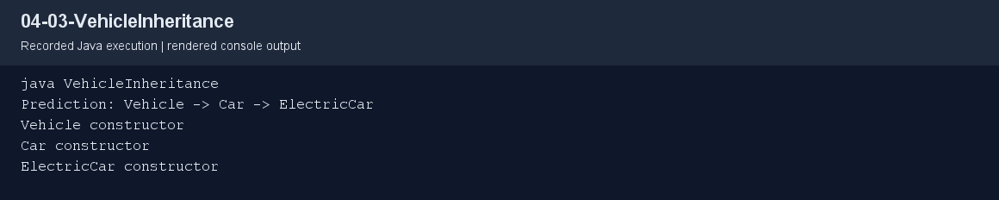
Conclusion: Superclass constructors finish before subclass constructors.
Source code
/** Lab 4, Exercise 3: superclass construction precedes subclass construction. */
public class VehicleInheritance {
static class Vehicle {
Vehicle() {
System.out.println("Vehicle constructor");
}
}
static class Car extends Vehicle {
Car() {
super();
System.out.println("Car constructor");
}
}
static class ElectricCar extends Car {
ElectricCar() {
super();
System.out.println("ElectricCar constructor");
}
}
public static void main(String[] args) {
System.out.println("Prediction: Vehicle -> Car -> ElectricCar");
new ElectricCar();
}
}
Exercise 4: AnimalConstructor
Objective: Explain and correct the implicit-super constructor error.
Java source · Execution transcript
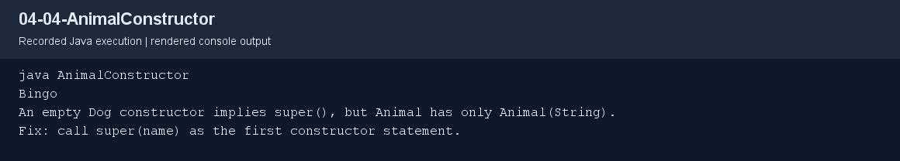
Conclusion: The commented failing example needs an explicit call to Animal(String).
Source code
/** Lab 4, Exercise 4: supply arguments when the parent has no Animal(). */
public class AnimalConstructor {
static class Animal {
private final String name;
Animal(String name) {
this.name = name;
}
public String getName() { return name; }
}
/* This would fail to compile (kept as a comment so this solution runs):
static class Dog extends Animal {
Dog() { } // implicit super(), but Animal() does not exist
}
*/
static class Dog extends Animal {
Dog(String name) {
super(name); // EXPLAIN: explicitly select the existing Animal(String).
}
}
public static void main(String[] args) {
System.out.println(new Dog("Bingo").getName());
System.out.println("An empty Dog constructor implies super(), but Animal has only Animal(String).");
System.out.println("Fix: call super(name) as the first constructor statement.");
}
}
Exercise 5: ComposedStack
Objective: Replace ArrayList inheritance with stack composition.
Java source · Execution transcript
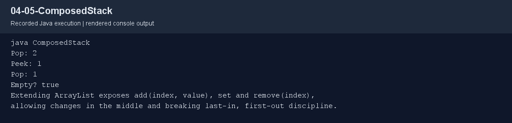
Conclusion: Only stack operations are exposed, so callers cannot edit arbitrary list positions.
Source code
import java.util.ArrayList;
import java.util.EmptyStackException;
/** Lab 4, Exercise 5: composition restricts the public API to stack operations. */
public class ComposedStack {
static class Stack<T> {
private final ArrayList<T> items = new ArrayList<>();
public void push(T item) {
items.add(item);
}
public T pop() {
if (isEmpty()) throw new EmptyStackException();
return items.remove(items.size() - 1);
}
public T peek() {
if (isEmpty()) throw new EmptyStackException();
return items.get(items.size() - 1);
}
public boolean isEmpty() {
return items.isEmpty();
}
}
public static void main(String[] args) {
Stack<Integer> stack = new Stack<>();
stack.push(1);
stack.push(2);
System.out.println("Pop: " + stack.pop());
System.out.println("Peek: " + stack.peek());
System.out.println("Pop: " + stack.pop());
System.out.println("Empty? " + stack.isEmpty());
System.out.println("Extending ArrayList exposes add(index, value), set and remove(index),");
System.out.println("allowing changes in the middle and breaking last-in, first-out discipline.");
}
}
Lab 5
Exercise 1: MethodOverloading
Objective: Test print overloads for four parameter types.
Java source · Execution transcript
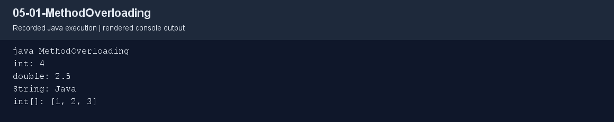
Conclusion: The declared argument type selects the overload at compile time.
Source code
import java.util.Arrays;
/** Lab 5, Exercise 1: overloading is selected using argument types. */
public class MethodOverloading {
static class Printer {
void print(int value) { System.out.println("int: " + value); }
void print(double value) { System.out.println("double: " + value); }
void print(String value) { System.out.println("String: " + value); }
void print(int[] values) { System.out.println("int[]: " + Arrays.toString(values)); }
}
public static void main(String[] args) {
Printer printer = new Printer();
printer.print(4);
printer.print(2.5);
printer.print("Java");
printer.print(new int[]{1, 2, 3});
}
}
Exercise 2: AnimalPolymorphism
Objective: Invoke Cat, Cow and Duck sound methods through Animal references.
Java source · Execution transcript
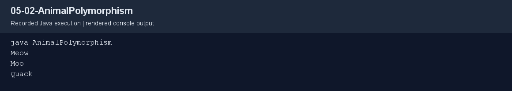
Conclusion: The actual object type chooses the overridden sound method at runtime.
Source code
/** Lab 5, Exercise 2: overridden methods dispatch on the actual object type. */
public class AnimalPolymorphism {
static class Animal {
void sound() { System.out.println("Animal sound"); }
}
static class Cat extends Animal {
@Override
void sound() { System.out.println("Meow"); }
}
static class Cow extends Animal {
@Override
void sound() { System.out.println("Moo"); }
}
static class Duck extends Animal {
@Override
void sound() { System.out.println("Quack"); }
}
public static void main(String[] args) {
Animal[] animals = {new Cat(), new Cow(), new Duck()};
for (Animal animal : animals) {
// EXPLAIN: one call selects a different implementation at run time.
animal.sound();
}
}
}
Exercise 3: EmployeePayroll
Objective: Add Intern and calculate a mixed employee payroll.
Java source · Execution transcript
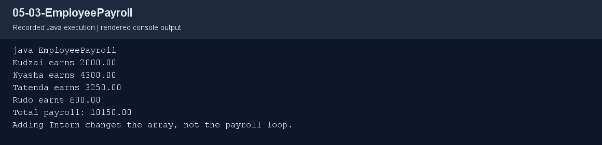
Conclusion: The same payroll loop handles Employee, Manager, Developer and Intern.
Source code
/** Lab 5, Exercise 3: extend the manual's Employee/Manager/Developer hierarchy. */
public class EmployeePayroll {
static class Employee {
private final String name;
protected final double baseSalary;
Employee(String name, double baseSalary) {
if (name == null || name.isBlank() || !Double.isFinite(baseSalary) || baseSalary < 0) {
throw new IllegalArgumentException("Name and a finite nonnegative salary are required");
}
this.name = name;
this.baseSalary = baseSalary;
}
public String getName() { return name; }
public double calculatePay() { return baseSalary; }
}
static class Manager extends Employee {
private final double bonus;
Manager(String name, double baseSalary, double bonus) {
super(name, baseSalary);
if (!Double.isFinite(bonus) || bonus < 0) throw new IllegalArgumentException("Invalid bonus");
this.bonus = bonus;
}
@Override
public double calculatePay() { return super.calculatePay() + bonus; }
}
static class Developer extends Employee {
private static final double OVERTIME_RATE = 25;
private final int overtimeHours;
Developer(String name, double baseSalary, int overtimeHours) {
super(name, baseSalary);
if (overtimeHours < 0) throw new IllegalArgumentException("Invalid overtime hours");
this.overtimeHours = overtimeHours;
}
@Override
public double calculatePay() { return baseSalary + overtimeHours * OVERTIME_RATE; }
}
static class Intern extends Employee {
Intern(String name, double stipend) { super(name, stipend); }
@Override
public double calculatePay() { return baseSalary; }
}
static double printPayroll(Employee[] employees) {
double total = 0;
for (Employee employee : employees) {
// EXPLAIN: no instanceof or subclass-specific branches are necessary.
double pay = employee.calculatePay();
System.out.printf("%s earns %.2f%n", employee.getName(), pay);
total += pay;
}
return total;
}
public static void main(String[] args) {
Employee[] employees = {
new Employee("Kudzai", 2000), new Manager("Nyasha", 3500, 800),
new Developer("Tatenda", 3000, 10), new Intern("Rudo", 600)
};
System.out.printf("Total payroll: %.2f%n", printPayroll(employees));
System.out.println("Adding Intern changes the array, not the payroll loop.");
}
}
Exercise 4: FieldMethodDispatch
Objective: Contrast field hiding and method dispatch.
Java source · Execution transcript
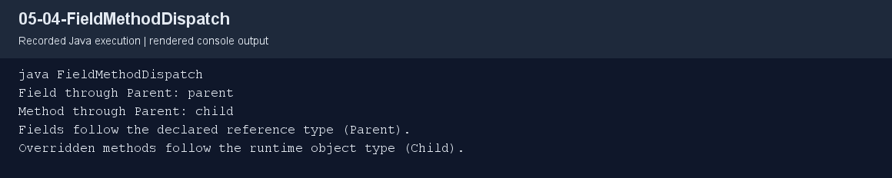
Conclusion: Fields use the reference type while overridden methods use the runtime object type.
Source code
/** Lab 5, Exercise 4: field hiding differs from method overriding. */
public class FieldMethodDispatch {
static class Parent {
String label = "parent";
String getLabel() { return label; }
}
static class Child extends Parent {
String label = "child";
@Override
String getLabel() { return label; }
}
public static void main(String[] args) {
Parent parent = new Child();
System.out.println("Field through Parent: " + parent.label);
System.out.println("Method through Parent: " + parent.getLabel());
System.out.println("Fields follow the declared reference type (Parent).");
System.out.println("Overridden methods follow the runtime object type (Child).");
}
}
Exercise 5: PaymentProcessing
Objective: Compare instanceof pattern matching with process dispatch.
Java source · Execution transcript
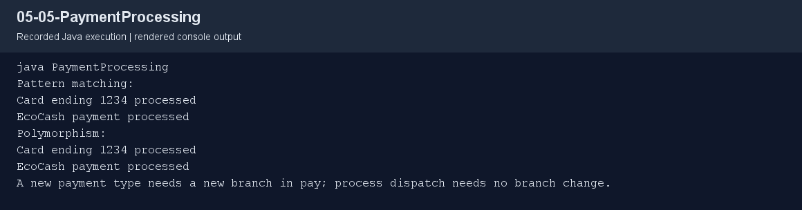
Conclusion: A new polymorphic payment class can reuse the processor without adding type branches.
Source code
/** Lab 5, Exercise 5: compare pattern matching with polymorphic dispatch. */
public class PaymentProcessing {
interface Payment {
void process();
}
static class CardPayment implements Payment {
private final String lastFourDigits;
CardPayment(String lastFourDigits) { this.lastFourDigits = lastFourDigits; }
public String getLastFourDigits() { return lastFourDigits; }
@Override
public void process() {
System.out.println("Card ending " + lastFourDigits + " processed");
}
}
static class MobileMoneyPayment implements Payment {
private final String provider;
MobileMoneyPayment(String provider) { this.provider = provider; }
public String getProvider() { return provider; }
@Override
public void process() { System.out.println(provider + " payment processed"); }
}
static class PaymentProcessor {
void pay(Payment payment) {
// EXPLAIN: the pattern variable combines a type check with a safe cast.
if (payment instanceof CardPayment card) {
System.out.println("Card ending " + card.getLastFourDigits() + " processed");
} else if (payment instanceof MobileMoneyPayment mobile) {
System.out.println(mobile.getProvider() + " payment processed");
} else {
throw new IllegalArgumentException("Unsupported payment type");
}
}
void payPolymorphically(Payment payment) {
payment.process();
}
}
public static void main(String[] args) {
PaymentProcessor processor = new PaymentProcessor();
Payment[] payments = {new CardPayment("1234"), new MobileMoneyPayment("EcoCash")};
System.out.println("Pattern matching:");
for (Payment payment : payments) processor.pay(payment);
System.out.println("Polymorphism:");
for (Payment payment : payments) processor.payPolymorphically(payment);
System.out.println("A new payment type needs a new branch in pay; process dispatch needs no branch change.");
}
}
Lab 6
Exercise 1: AbstractShapes
Objective: Implement abstract area and perimeter contracts.
Java source · Execution transcript
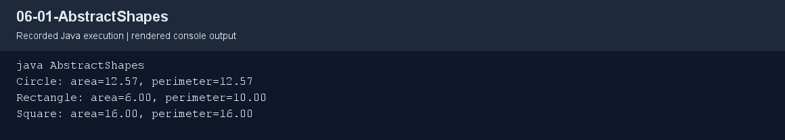
Conclusion: Concrete shapes fulfil the same abstract contract with different calculations.
Source code
/** Lab 6, Exercise 1: concrete shapes implement an abstract contract. */
public class AbstractShapes {
static abstract class Shape {
public abstract double area();
public abstract double perimeter();
protected static double positive(double dimension) {
if (!Double.isFinite(dimension) || dimension <= 0) {
throw new IllegalArgumentException("Dimensions must be finite and positive");
}
return dimension;
}
}
static class Circle extends Shape {
private final double radius;
Circle(double radius) { this.radius = positive(radius); }
@Override public double area() { return Math.PI * radius * radius; }
@Override public double perimeter() { return 2 * Math.PI * radius; }
}
static class Rectangle extends Shape {
private final double width;
private final double height;
Rectangle(double width, double height) {
this.width = positive(width);
this.height = positive(height);
}
@Override public double area() { return width * height; }
@Override public double perimeter() { return 2 * (width + height); }
}
static class Square extends Rectangle {
Square(double side) { super(side, side); }
}
public static void main(String[] args) {
Shape[] shapes = {new Circle(2), new Rectangle(2, 3), new Square(4)};
for (Shape shape : shapes) {
System.out.printf("%s: area=%.2f, perimeter=%.2f%n",
shape.getClass().getSimpleName(), shape.area(), shape.perimeter());
}
}
}
Exercise 2: FlyableDemo
Objective: Give unrelated classes a shared interface.
Java source · Execution transcript
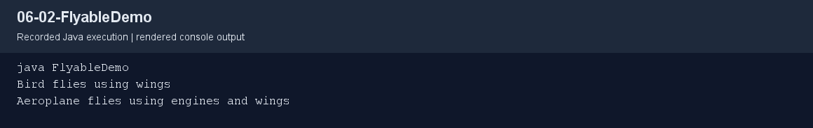
Conclusion: An interface describes a shared capability without a shared domain superclass.
Source code
/** Lab 6, Exercise 2: unrelated classes share a capability through an interface. */
public class FlyableDemo {
interface Flyable {
void fly();
}
static class Bird implements Flyable {
@Override public void fly() { System.out.println("Bird flies using wings"); }
}
static class Aeroplane implements Flyable {
@Override public void fly() { System.out.println("Aeroplane flies using engines and wings"); }
}
public static void main(String[] args) {
// Both ultimately extend Object, but have no shared domain superclass.
Flyable[] flyers = {new Bird(), new Aeroplane()};
for (Flyable flyer : flyers) flyer.fly();
}
}
Exercise 3: AccountAbstraction
Objective: Share deposit logic and specialise monthly fees.
Java source · Execution transcript
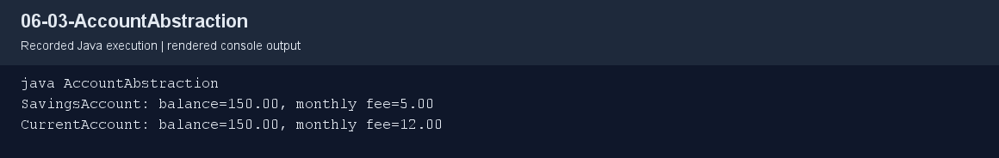
Conclusion: Concrete account types supply the abstract fee while reusing balance management.
Source code
/** Lab 6, Exercise 3: abstract accounts share deposit behaviour. */
public class AccountAbstraction {
static abstract class Account {
private double balance;
Account(double openingBalance) {
if (!Double.isFinite(openingBalance) || openingBalance < 0) {
throw new IllegalArgumentException("Invalid opening balance");
}
balance = openingBalance;
}
public final void deposit(double amount) {
if (!Double.isFinite(amount) || amount <= 0 || !Double.isFinite(balance + amount)) {
throw new IllegalArgumentException("Deposit must be positive and leave a finite balance");
}
balance += amount;
}
public double getBalance() { return balance; }
public abstract double monthlyFee();
}
static class SavingsAccount extends Account {
SavingsAccount(double balance) { super(balance); }
@Override public double monthlyFee() { return 5; }
}
static class CurrentAccount extends Account {
CurrentAccount(double balance) { super(balance); }
@Override public double monthlyFee() { return 12; }
}
public static void main(String[] args) {
Account[] accounts = {new SavingsAccount(100), new CurrentAccount(100)};
for (Account account : accounts) {
account.deposit(50);
System.out.printf("%s: balance=%.2f, monthly fee=%.2f%n",
account.getClass().getSimpleName(), account.getBalance(), account.monthlyFee());
}
}
}
Exercise 4: ComparableStudents
Objective: Sort students by natural name order and a marks comparator.
Java source · Execution transcript
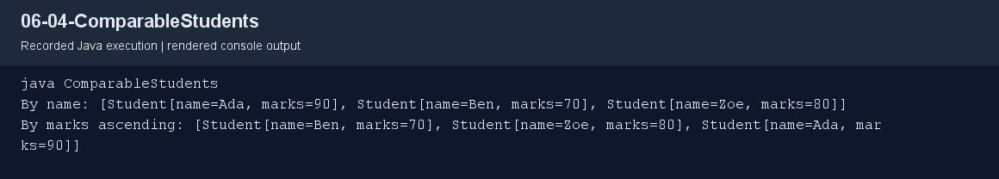
Conclusion: Comparable supplies the default ordering and Comparator supplies an alternative.
Source code
import java.util.ArrayList;
import java.util.Collections;
import java.util.Comparator;
import java.util.List;
/** Lab 6, Exercise 4: natural ordering and an alternative Comparator. */
public class ComparableStudents {
record Student(String name, int marks) implements Comparable<Student> {
Student {
if (name == null || name.isBlank() || marks < 0 || marks > 100) {
throw new IllegalArgumentException("Name and marks from 0 to 100 are required");
}
}
@Override
public int compareTo(Student other) {
return name.compareTo(other.name);
}
}
public static void main(String[] args) {
List<Student> students = new ArrayList<>(List.of(
new Student("Zoe", 80), new Student("Ada", 90), new Student("Ben", 70)));
Collections.sort(students);
System.out.println("By name: " + students);
students.sort(Comparator.comparingInt(Student::marks).thenComparing(Student::name));
System.out.println("By marks ascending: " + students);
}
}
Exercise 5: DefaultMethodConflict
Objective: Resolve two conflicting interface default methods.
Java source · Execution transcript
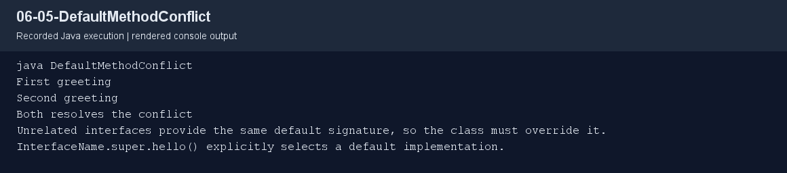
Conclusion: The class overrides hello and explicitly chooses defaults with InterfaceName.super.
Source code
/** Lab 6, Exercise 5: resolve conflicting interface default methods explicitly. */
public class DefaultMethodConflict {
interface FirstGreeting {
default void hello() { System.out.println("First greeting"); }
}
interface SecondGreeting {
default void hello() { System.out.println("Second greeting"); }
}
static class Both implements FirstGreeting, SecondGreeting {
@Override
public void hello() {
FirstGreeting.super.hello();
SecondGreeting.super.hello();
System.out.println("Both resolves the conflict");
}
}
public static void main(String[] args) {
new Both().hello();
System.out.println("Unrelated interfaces provide the same default signature, so the class must override it.");
System.out.println("InterfaceName.super.hello() explicitly selects a default implementation.");
}
}
Lab 7
Exercise 1: SafeDivision
Objective: Read integers and handle invalid input or zero divisor.
Java source · Execution transcript
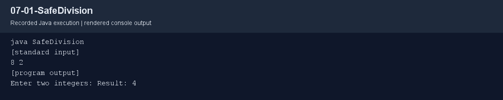
Conclusion: Successful integer division and both requested exception paths are exercised.
Source code
import java.util.InputMismatchException;
import java.util.NoSuchElementException;
import java.util.Scanner;
/** Lab 7, Exercise 1: handle invalid integer input and division by zero. */
public class SafeDivision {
public static void main(String[] args) {
try (Scanner scanner = new Scanner(System.in)) {
System.out.print("Enter two integers: ");
int numerator = scanner.nextInt();
int denominator = scanner.nextInt();
System.out.println("Result: " + (numerator / denominator));
} catch (InputMismatchException exception) {
System.out.println("Input must contain two valid integers.");
} catch (NoSuchElementException exception) {
System.out.println("Input ended before two integers were supplied.");
} catch (ArithmeticException exception) {
System.out.println("Cannot divide by zero.");
}
}
}
Exercise 2: SafeArrayAccess
Objective: Catch array index errors at the access point.
Java source · Execution transcript
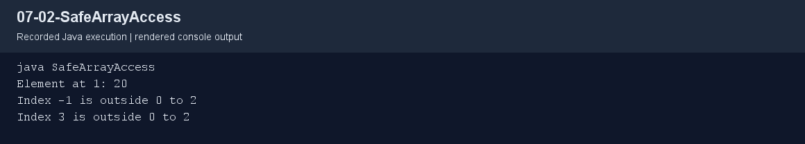
Conclusion: Invalid indexes are reported without terminating the demonstration.
Source code
/** Lab 7, Exercise 2: catch an invalid array index at the access point. */
public class SafeArrayAccess {
static void printElement(int[] values, int index) {
try {
System.out.println("Element at " + index + ": " + values[index]);
} catch (ArrayIndexOutOfBoundsException exception) {
System.out.println("Index " + index + " is outside 0 to " + (values.length - 1));
}
}
public static void main(String[] args) {
int[] values = {10, 20, 30};
printElement(values, 1);
printElement(values, -1);
printElement(values, values.length);
}
}
Exercise 3: AgeValidation
Objective: Throw a checked exception outside ages 0 to 120.
Java source · Execution transcript
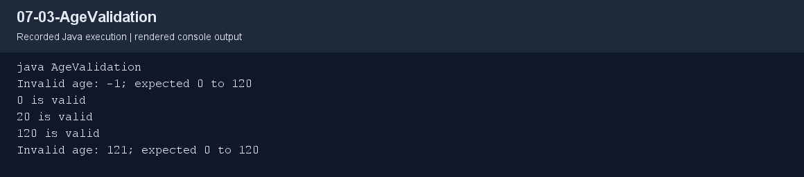
Conclusion: The checked exception makes validation failure part of the method contract.
Source code
/** Lab 7, Exercise 3: a checked exception must be caught or declared. */
public class AgeValidation {
static class InvalidAgeException extends Exception {
private static final long serialVersionUID = 1L;
InvalidAgeException(int age) {
super("Invalid age: " + age + "; expected 0 to 120");
}
}
static void validateAge(int age) throws InvalidAgeException {
if (age < 0 || age > 120) throw new InvalidAgeException(age);
}
public static void main(String[] args) {
for (int age : new int[]{-1, 0, 20, 120, 121}) {
try {
validateAge(age);
System.out.println(age + " is valid");
} catch (InvalidAgeException exception) {
System.out.println(exception.getMessage());
}
}
}
}
Exercise 4: InsufficientFunds
Objective: Throw a checked exception instead of returning false.
Java source · Execution transcript
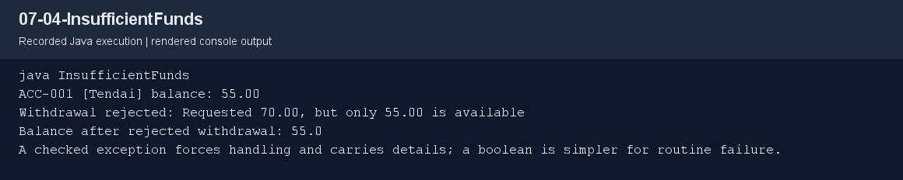
Conclusion: The exception carries failure details and leaves the account balance unchanged.
Source code
/** Lab 7, Exercise 4: replace an insufficient-funds boolean with a checked exception. */
public class InsufficientFunds {
static class InsufficientFundsException extends Exception {
private static final long serialVersionUID = 1L;
InsufficientFundsException(double balance, double requested) {
super(String.format("Requested %.2f, but only %.2f is available", requested, balance));
}
}
static class BankAccount {
private final String accountNumber;
private final String ownerName;
private double balance;
BankAccount(String accountNumber, String ownerName, double openingBalance) {
if (accountNumber == null || accountNumber.isBlank() || ownerName == null || ownerName.isBlank()) {
throw new IllegalArgumentException("Account number and owner name are required");
}
if (!Double.isFinite(openingBalance) || openingBalance < 0) {
throw new IllegalArgumentException("Opening balance must be finite and nonnegative");
}
this.accountNumber = accountNumber;
this.ownerName = ownerName;
this.balance = openingBalance;
}
public double getBalance() { return balance; }
public void deposit(double amount) {
requirePositive(amount);
if (!Double.isFinite(balance + amount)) throw new IllegalArgumentException("Balance too large");
balance += amount;
}
public void withdraw(double amount) throws InsufficientFundsException {
requirePositive(amount);
if (amount > balance) throw new InsufficientFundsException(balance, amount);
balance -= amount;
}
private static void requirePositive(double amount) {
if (!Double.isFinite(amount) || amount <= 0) {
throw new IllegalArgumentException("Amount must be finite and positive");
}
}
@Override
public String toString() {
return String.format("%s [%s] balance: %.2f", accountNumber, ownerName, balance);
}
}
public static void main(String[] args) {
BankAccount account = new BankAccount("ACC-001", "Tendai", 50);
account.deposit(25);
try {
account.withdraw(20);
System.out.println(account);
account.withdraw(70);
} catch (InsufficientFundsException exception) {
System.out.println("Withdrawal rejected: " + exception.getMessage());
}
System.out.println("Balance after rejected withdrawal: " + account.getBalance());
System.out.println("A checked exception forces handling and carries details; a boolean is simpler for routine failure.");
}
}
Exercise 5: FinallyReturn
Objective: Predict finally execution around a return.
Java source · Execution transcript
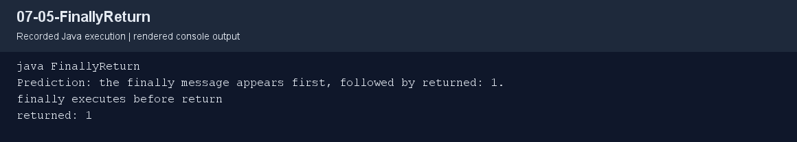
Conclusion: The finally block executes before the pending return completes.
Source code
/** Lab 7, Exercise 5: finally executes before a pending return completes. */
public class FinallyReturn {
static int demonstrateFinally() {
try {
return 1;
} finally {
// EXPLAIN: cleanup runs after evaluating the return value, before returning.
System.out.println("finally executes before return");
}
}
public static void main(String[] args) {
System.out.println("Prediction: the finally message appears first, followed by returned: 1.");
System.out.println("returned: " + demonstrateFinally());
}
}
Lab 8
Exercise 1: IntegerArrayList
Objective: Summarise ten integers and reverse their order.
Java source · Execution transcript
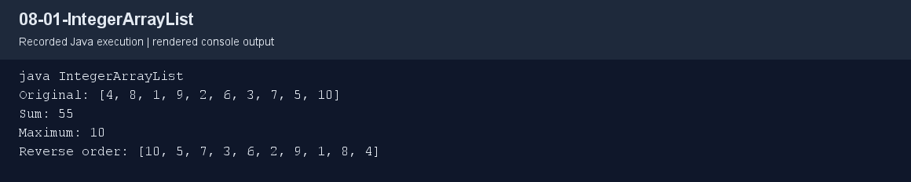
Conclusion: ArrayList stores boxed integers and Collections supplies maximum and reversal operations.
Source code
import java.util.ArrayList;
import java.util.Collections;
import java.util.List;
/** Lab 8, Exercise 1: store and summarise ten integers in an ArrayList. */
public class IntegerArrayList {
public static void main(String[] args) {
ArrayList<Integer> numbers = new ArrayList<>(List.of(4, 8, 1, 9, 2, 6, 3, 7, 5, 10));
int sum = 0;
for (int number : numbers) sum += number;
System.out.println("Original: " + numbers);
System.out.println("Sum: " + sum);
System.out.println("Maximum: " + Collections.max(numbers));
Collections.reverse(numbers);
System.out.println("Reverse order: " + numbers);
}
}
Exercise 2: UniqueNames
Objective: Remove name duplicates with a Set.
Java source · Execution transcript
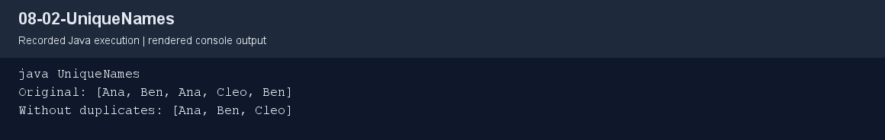
Conclusion: LinkedHashSet also preserves first-occurrence order.
Source code
import java.util.LinkedHashSet;
import java.util.List;
import java.util.Set;
/** Lab 8, Exercise 2: a Set stores each distinct name once. */
public class UniqueNames {
public static void main(String[] args) {
List<String> names = List.of("Ana", "Ben", "Ana", "Cleo", "Ben");
// EXPLAIN: LinkedHashSet also preserves first-occurrence order.
Set<String> uniqueNames = new LinkedHashSet<>(names);
System.out.println("Original: " + names);
System.out.println("Without duplicates: " + uniqueNames);
}
}
Exercise 3: GenericStack
Objective: Build a generic stack with all four operations.
Java source · Execution transcript
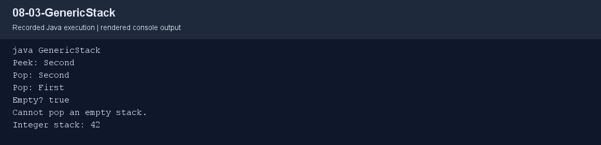
Conclusion: Type parameters give compile-time safety and empty-stack operations fail clearly.
Source code
import java.util.ArrayList;
import java.util.EmptyStackException;
/** Lab 8, Exercise 3: a type-safe last-in, first-out collection. */
public class GenericStack {
static class Stack<T> {
private final ArrayList<T> items = new ArrayList<>();
public void push(T item) { items.add(item); }
public T pop() {
if (isEmpty()) throw new EmptyStackException();
return items.remove(items.size() - 1);
}
public T peek() {
if (isEmpty()) throw new EmptyStackException();
return items.get(items.size() - 1);
}
public boolean isEmpty() { return items.isEmpty(); }
}
public static void main(String[] args) {
Stack<String> words = new Stack<>();
words.push("First");
words.push("Second");
System.out.println("Peek: " + words.peek());
System.out.println("Pop: " + words.pop());
System.out.println("Pop: " + words.pop());
System.out.println("Empty? " + words.isEmpty());
try {
words.pop();
} catch (EmptyStackException exception) {
System.out.println("Cannot pop an empty stack.");
}
Stack<Integer> numbers = new Stack<>();
numbers.push(42);
System.out.println("Integer stack: " + numbers.pop());
}
}
Exercise 4: WordFrequency
Objective: Read and rank case-insensitive word frequencies.
Java source · Execution transcript
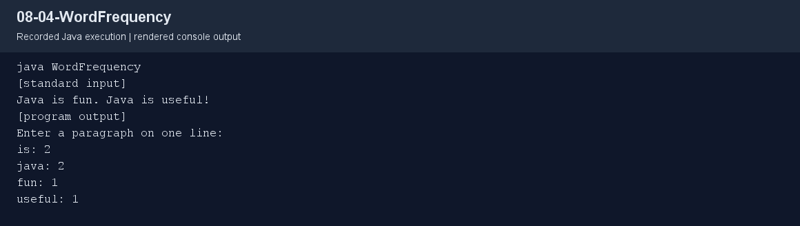
Conclusion: A map counts words, then entries sort by decreasing count and alphabetic tie-break.
Source code
import java.util.HashMap;
import java.util.Locale;
import java.util.Map;
import java.util.Scanner;
import java.util.regex.Matcher;
import java.util.regex.Pattern;
/** Lab 8, Exercise 4: read a paragraph and rank case-insensitive word frequencies. */
public class WordFrequency {
static Map<String, Integer> countWords(String paragraph) {
Map<String, Integer> frequencies = new HashMap<>();
// Words consist of letters/digits and may contain an internal apostrophe.
Matcher matcher = Pattern.compile("[\\p{L}\\p{N}]+(?:'[\\p{L}\\p{N}]+)*")
.matcher(paragraph.toLowerCase(Locale.ROOT));
while (matcher.find()) frequencies.merge(matcher.group(), 1, Integer::sum);
return frequencies;
}
public static void main(String[] args) {
try (Scanner scanner = new Scanner(System.in)) {
System.out.println("Enter a paragraph on one line:");
if (!scanner.hasNextLine()) {
System.out.println("No paragraph supplied.");
return;
}
Map<String, Integer> frequencies = countWords(scanner.nextLine());
if (frequencies.isEmpty()) System.out.println("No words found.");
frequencies.entrySet().stream()
.sorted(Map.Entry.<String, Integer>comparingByValue().reversed()
.thenComparing(Map.Entry.comparingByKey()))
.forEach(entry -> System.out.println(entry.getKey() + ": " + entry.getValue()));
}
}
}
Exercise 5: GenericBubbleSort
Objective: Sort Integer and String arrays with a bounded generic method.
Java source · Execution transcript
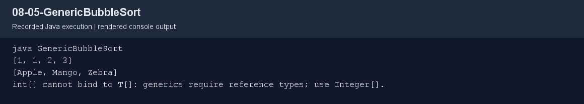
Conclusion: Comparable supplies comparisons; int[] cannot bind to reference-type T[].
Source code
import java.util.Arrays;
/** Lab 8, Exercise 5: sort comparable reference types with a generic method. */
public class GenericBubbleSort {
static <T extends Comparable<T>> void bubbleSort(T[] values) {
for (int pass = 0; pass < values.length - 1; pass++) {
boolean swapped = false;
for (int index = 0; index < values.length - 1 - pass; index++) {
if (values[index].compareTo(values[index + 1]) > 0) {
T temporary = values[index];
values[index] = values[index + 1];
values[index + 1] = temporary;
swapped = true;
}
}
if (!swapped) break;
}
}
public static void main(String[] args) {
Integer[] numbers = {3, 1, 2, 1};
String[] words = {"Zebra", "Apple", "Mango"};
bubbleSort(numbers);
bubbleSort(words);
System.out.println(Arrays.toString(numbers));
System.out.println(Arrays.toString(words));
System.out.println("int[] cannot bind to T[]: generics require reference types; use Integer[].");
}
}
Lab 9
Exercise 1: LevelAdvice
Objective: Switch over the three enum constants.
Java source · Execution transcript
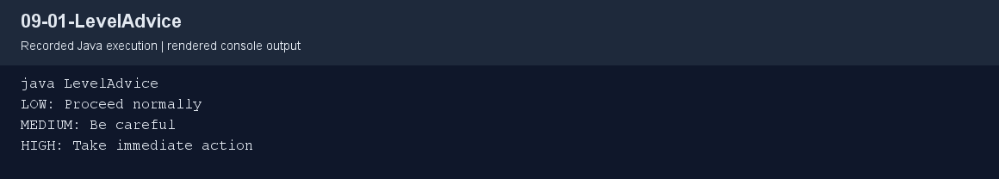
Conclusion: The enum restricts input to the defined levels.
Source code
/** Lab 9, Exercise 1: enum constants form a fixed set of valid levels. */
public class LevelAdvice {
enum Level { LOW, MEDIUM, HIGH }
static String advice(Level level) {
return switch (level) {
case LOW -> "Proceed normally";
case MEDIUM -> "Be careful";
case HIGH -> "Take immediate action";
};
}
public static void main(String[] args) {
for (Level level : Level.values()) {
System.out.println(level + ": " + advice(level));
}
}
}
Exercise 2: StudentRecord
Objective: Print a record, compare equal values and access components.
Java source · Execution transcript
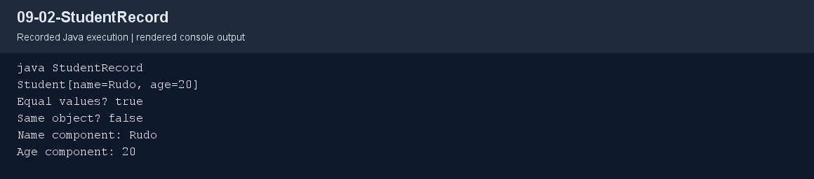
Conclusion: Records generate component accessors and value-based equality.
Source code
/** Lab 9, Exercise 2: records generate accessors and value-based Object methods. */
public class StudentRecord {
record Student(String name, int age) { }
public static void main(String[] args) {
Student first = new Student("Rudo", 20);
Student second = new Student("Rudo", 20);
System.out.println(first);
System.out.println("Equal values? " + first.equals(second));
System.out.println("Same object? " + (first == second));
System.out.println("Name component: " + first.name());
System.out.println("Age component: " + first.age());
}
}
Exercise 3: BookEquality
Objective: Reject duplicate ISBNs in a HashSet.
Java source · Execution transcript
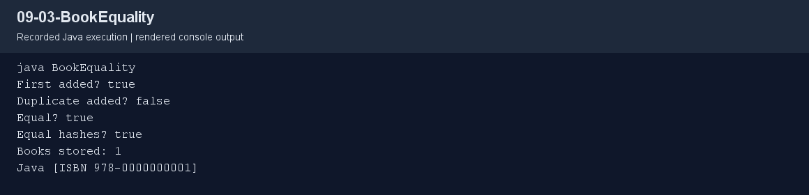
Conclusion: Matching equals and hashCode allow correct set membership.
Source code
import java.util.HashSet;
import java.util.Set;
/** Lab 9, Exercise 3: ISBN determines Book equality and hash codes. */
public class BookEquality {
static final class Book {
private final String title;
private final String isbn;
Book(String title, String isbn) {
if (title == null || title.isBlank() || isbn == null || isbn.isBlank()) {
throw new IllegalArgumentException("Title and ISBN are required");
}
this.title = title;
this.isbn = isbn;
}
@Override
public boolean equals(Object other) {
return this == other || other instanceof Book book && isbn.equals(book.isbn);
}
@Override
public int hashCode() {
// EXPLAIN: equal ISBNs must give equal hash codes for HashSet lookup.
return isbn.hashCode();
}
@Override
public String toString() { return title + " [ISBN " + isbn + "]"; }
}
public static void main(String[] args) {
Book first = new Book("Java", "978-0000000001");
Book duplicate = new Book("Another edition", "978-0000000001");
Set<Book> books = new HashSet<>();
System.out.println("First added? " + books.add(first));
System.out.println("Duplicate added? " + books.add(duplicate));
System.out.println("Equal? " + first.equals(duplicate));
System.out.println("Equal hashes? " + (first.hashCode() == duplicate.hashCode()));
System.out.println("Books stored: " + books.size());
System.out.println(first);
}
}
Exercise 4: CustomLinkedList
Objective: Use a static Node and inner iterator in a for-each loop.
Java source · Execution transcript
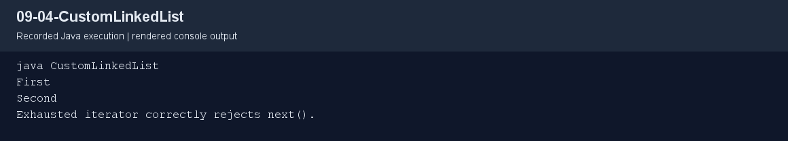
Conclusion: The list implements Iterable and its iterator obeys the exhaustion contract.
Source code
import java.util.ConcurrentModificationException;
import java.util.Iterator;
import java.util.NoSuchElementException;
/** Lab 9, Exercise 4: a static Node and an inner Iterator support for-each. */
public class CustomLinkedList {
static class LinkedList<T> implements Iterable<T> {
// EXPLAIN: static nodes do not retain a reference to the enclosing list.
private static class Node<T> {
private final T value;
private Node<T> next;
Node(T value) { this.value = value; }
}
private Node<T> head;
private Node<T> tail;
private int modificationCount;
public void add(T value) {
Node<T> node = new Node<>(value);
if (head == null) head = node;
else tail.next = node;
tail = node;
modificationCount++;
}
@Override
public Iterator<T> iterator() {
return new ListIterator();
}
// EXPLAIN: the non-static inner iterator can access this list's head.
private class ListIterator implements Iterator<T> {
private Node<T> current = head;
private final int expectedModificationCount = modificationCount;
@Override
public boolean hasNext() {
checkModification();
return current != null;
}
@Override
public T next() {
checkModification();
if (current == null) throw new NoSuchElementException("Iterator exhausted");
T value = current.value;
current = current.next;
return value;
}
private void checkModification() {
if (expectedModificationCount != modificationCount) {
throw new ConcurrentModificationException("List changed during iteration");
}
}
}
}
public static void main(String[] args) {
LinkedList<String> words = new LinkedList<>();
words.add("First");
words.add("Second");
for (String word : words) System.out.println(word);
Iterator<String> iterator = words.iterator();
while (iterator.hasNext()) iterator.next();
try {
iterator.next();
} catch (NoSuchElementException exception) {
System.out.println("Exhausted iterator correctly rejects next().");
}
}
}
Exercise 5: CoinChange
Objective: Return a minimum set of US coins.
Java source · Execution transcript
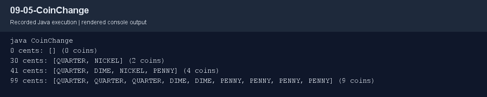
Conclusion: Greedy change is checked against an independent minimum-coin calculation for amounts 0-200.
Source code
import java.util.ArrayList;
import java.util.List;
/** Lab 9, Exercise 5: calculate minimum change for US coin denominations. */
public class CoinChange {
enum Coin {
PENNY(1), NICKEL(5), DIME(10), QUARTER(25);
private final int cents;
Coin(int cents) { this.cents = cents; }
public int getCents() { return cents; }
}
static List<Coin> fewestCoins(int amount) {
if (amount < 0) throw new IllegalArgumentException("Amount cannot be negative");
List<Coin> result = new ArrayList<>();
Coin[] descending = {Coin.QUARTER, Coin.DIME, Coin.NICKEL, Coin.PENNY};
// Greedy selection is optimal for these denominations; not for every coin system.
for (Coin coin : descending) {
while (amount >= coin.getCents()) {
result.add(coin);
amount -= coin.getCents();
}
}
return List.copyOf(result);
}
public static void main(String[] args) {
for (int amount : new int[]{0, 30, 41, 99}) {
List<Coin> coins = fewestCoins(amount);
System.out.println(amount + " cents: " + coins + " (" + coins.size() + " coins)");
}
}
}
Lab 10
Exercise 1: FileLines
Objective: Save five user-entered lines and read them back.
Java source · Execution transcript
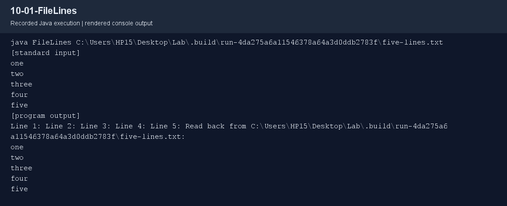
Conclusion: All five lines are round-tripped to UTF-8 text without creating a partial file on short input.
Source code
import java.io.BufferedReader;
import java.io.IOException;
import java.nio.charset.StandardCharsets;
import java.nio.file.Files;
import java.nio.file.Path;
import java.util.ArrayList;
import java.util.List;
import java.util.Scanner;
/** Lab 10, Exercise 1: save five user-entered lines, then read them back. */
public class FileLines {
public static void main(String[] args) {
Path file = Path.of(args.length > 0 ? args[0] : "exercise1.txt");
try (Scanner scanner = new Scanner(System.in)) {
List<String> lines = new ArrayList<>();
for (int number = 1; number <= 5; number++) {
System.out.print("Line " + number + ": ");
if (!scanner.hasNextLine()) {
System.out.println("Input ended; five lines are required. No file written.");
return;
}
lines.add(scanner.nextLine());
}
Files.write(file, lines, StandardCharsets.UTF_8);
System.out.println("Read back from " + file + ":");
try (BufferedReader reader = Files.newBufferedReader(file, StandardCharsets.UTF_8)) {
String line;
while ((line = reader.readLine()) != null) System.out.println(line);
}
} catch (IOException exception) {
System.err.println("File operation failed: " + exception.getMessage());
}
}
}
Exercise 2: RemoveEvenNumbers
Objective: Use an explicit Predicate with removeIf.
Java source · Execution transcript
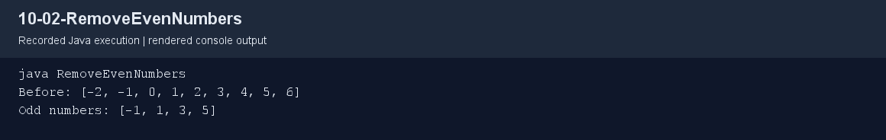
Conclusion: The predicate removes even numbers including zero and negative evens.
Source code
import java.util.ArrayList;
import java.util.List;
import java.util.function.Predicate;
/** Lab 10, Exercise 2: supply a Predicate to removeIf. */
public class RemoveEvenNumbers {
public static void main(String[] args) {
List<Integer> numbers = new ArrayList<>(List.of(-2, -1, 0, 1, 2, 3, 4, 5, 6));
Predicate<Integer> isEven = number -> number % 2 == 0;
System.out.println("Before: " + numbers);
numbers.removeIf(isEven);
System.out.println("Odd numbers: " + numbers);
}
}
Exercise 3: FileStatistics
Objective: Count lines, words and Unicode characters in a text file.
Java source · Execution transcript
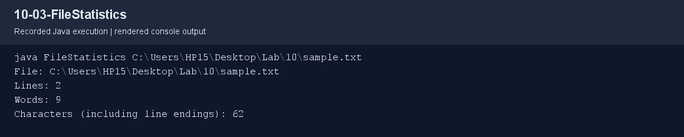
Conclusion: The report states whether line-ending characters are included in the count.
Source code
import java.io.IOException;
import java.nio.charset.StandardCharsets;
import java.nio.file.Files;
import java.nio.file.Path;
/** Lab 10, Exercise 3: count lines, whitespace-separated words and Unicode characters. */
public class FileStatistics {
public static void main(String[] args) {
Path file = Path.of(args.length > 0 ? args[0] : "sample.txt");
try {
String text = Files.readString(file, StandardCharsets.UTF_8);
long lines = text.lines().count();
long words = text.isBlank() ? 0 : text.strip().split("\\s+").length;
// Count Unicode code points; CR and LF each count as characters.
long characters = text.codePoints().count();
System.out.println("File: " + file);
System.out.println("Lines: " + lines);
System.out.println("Words: " + words);
System.out.println("Characters (including line endings): " + characters);
} catch (IOException exception) {
System.err.println("Cannot read file: " + exception.getMessage());
}
}
}
Exercise 4: AboveAverageStudents
Objective: Use streams to select names above average alphabetically.
Java source · Execution transcript
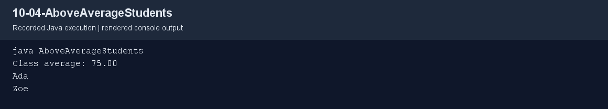
Conclusion: Average, filtering, mapping and sorting are separate stream operations.
Source code
import java.util.List;
/** Lab 10, Exercise 4: filter above-average students and sort their names. */
public class AboveAverageStudents {
record Student(String name, double marks) {
Student {
if (name == null || name.isBlank() || !Double.isFinite(marks) || marks < 0 || marks > 100) {
throw new IllegalArgumentException("Name and marks from 0 to 100 are required");
}
}
}
public static void main(String[] args) {
List<Student> students = List.of(new Student("Zoe", 90), new Student("Ada", 85),
new Student("Ben", 60), new Student("Rudo", 65));
double average = students.stream().mapToDouble(Student::marks).average().orElse(0);
System.out.printf("Class average: %.2f%n", average);
students.stream()
.filter(student -> student.marks() > average)
.map(Student::name)
.sorted()
.forEach(System.out::println);
}
}
Exercise 5: LearnerReports
Objective: Load CSV, group learners by grade band and save three reports.
Java source · Execution transcript
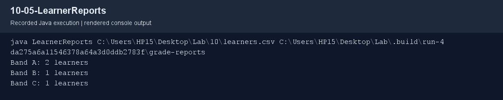
Conclusion: Collectors.groupingBy produces groups, and one report is written for each A/B/C band.
Source code
import java.io.IOException;
import java.nio.charset.StandardCharsets;
import java.nio.file.Files;
import java.nio.file.Path;
import java.util.ArrayList;
import java.util.List;
import java.util.Map;
import java.util.TreeMap;
import java.util.stream.Collectors;
/** Lab 10, Exercise 5: load name,roll,gpa CSV and write reports grouped by grade band. */
public class LearnerReports {
record Learner(String name, int roll, double gpa) {
Learner {
if (name == null || name.isBlank() || roll <= 0 || !Double.isFinite(gpa) || gpa < 0 || gpa > 4) {
throw new IllegalArgumentException("Expected name, positive roll and GPA from 0 to 4");
}
}
String gradeBand() {
// Assumption, since the exercise gives no cutoffs: A >= 3.5, B >= 3.0, C below 3.0.
return gpa >= 3.5 ? "A" : gpa >= 3.0 ? "B" : "C";
}
}
static List<Learner> loadLearners(Path file) throws IOException {
List<Learner> learners = new ArrayList<>();
List<String> lines = Files.readAllLines(file, StandardCharsets.UTF_8);
for (int index = 0; index < lines.size(); index++) {
String line = lines.get(index).strip();
if (line.isEmpty() || index == 0 && line.equalsIgnoreCase("name,roll,gpa")) continue;
// The manual uses simple unquoted CSV; commas inside names are not supported here.
String[] parts = line.split(",", -1);
try {
if (parts.length != 3) throw new IllegalArgumentException("Expected three columns");
learners.add(new Learner(parts[0].strip(), Integer.parseInt(parts[1].strip()),
Double.parseDouble(parts[2].strip())));
} catch (IllegalArgumentException exception) {
throw new IOException("Invalid CSV row " + (index + 1) + ": " + exception.getMessage(), exception);
}
}
return learners;
}
public static void main(String[] args) {
Path csv = Path.of(args.length > 0 ? args[0] : "learners.csv");
Path outputDirectory = Path.of(args.length > 1 ? args[1] : ".");
try {
Map<String, List<Learner>> groups = loadLearners(csv).stream()
.collect(Collectors.groupingBy(Learner::gradeBand, TreeMap::new, Collectors.toList()));
Files.createDirectories(outputDirectory);
for (String band : List.of("A", "B", "C")) {
List<String> report = new ArrayList<>();
report.add("Grade band " + band);
report.add("name,roll,gpa");
List<Learner> learners = groups.getOrDefault(band, List.of());
learners.stream().sorted(java.util.Comparator.comparing(Learner::name))
.map(learner -> learner.name() + "," + learner.roll() + "," + learner.gpa())
.forEach(report::add);
Files.write(outputDirectory.resolve("report-" + band + ".txt"), report, StandardCharsets.UTF_8);
System.out.println("Band " + band + ": " + learners.size() + " learners");
}
} catch (IOException exception) {
System.err.println("Report generation failed: " + exception.getMessage());
}
}
}
Lab 11
Exercise 1: SingletonFactoryDemo
Objective: Demonstrate Singleton and Factory patterns.
Java source · Execution transcript
Conclusion: A private constructor controls shared configuration and a factory hides concrete notification creation.
Source code
import java.util.Locale;
/** Lab 11, Program 11.1: one configuration instance and interface-based creation. */
public class SingletonFactoryDemo {
static final class AppConfig {
private static final AppConfig INSTANCE = new AppConfig();
private final String institution = "Example University";
private AppConfig() { }
public static AppConfig getInstance() { return INSTANCE; }
public String getInstitution() { return institution; }
}
interface Notification { void send(String message); }
static class EmailNotification implements Notification {
@Override public void send(String message) { System.out.println("Email: " + message); }
}
static class SmsNotification implements Notification {
@Override public void send(String message) { System.out.println("SMS: " + message); }
}
static class NotificationFactory {
static Notification create(String type) {
return switch (type.toLowerCase(Locale.ROOT)) {
case "email" -> new EmailNotification();
case "sms" -> new SmsNotification();
default -> throw new IllegalArgumentException("Unknown type: " + type);
};
}
}
public static void main(String[] args) {
AppConfig a = AppConfig.getInstance(), b = AppConfig.getInstance();
System.out.println("Same instance? " + (a == b) + " -> " + a.getInstitution());
NotificationFactory.create("email").send("Lab 11 is open");
NotificationFactory.create("SMS").send("Lab 11 is open");
}
}
Exercise 2: StrategyObserverDemo
Objective: Demonstrate Strategy and Observer patterns.
Java source · Execution transcript
Conclusion: A strategy changes checkout behaviour and observers receive grade events.
Source code
import java.util.ArrayList;
import java.util.List;
import java.util.Objects;
/** Lab 11, Program 11.2: interchangeable algorithms and subscribed listeners. */
public class StrategyObserverDemo {
interface DiscountStrategy { double apply(double price); }
static class Checkout {
private DiscountStrategy strategy;
Checkout(DiscountStrategy strategy) { setStrategy(strategy); }
void setStrategy(DiscountStrategy strategy) { this.strategy = Objects.requireNonNull(strategy); }
double total(double price) { return strategy.apply(price); }
}
interface GradeListener { void onGradePublished(String course, int mark); }
static class GradeBook {
private final List<GradeListener> listeners = new ArrayList<>();
void subscribe(GradeListener listener) { listeners.add(Objects.requireNonNull(listener)); }
void publish(String course, int mark) {
for (GradeListener listener : listeners) listener.onGradePublished(course, mark);
}
}
public static void main(String[] args) {
Checkout checkout = new Checkout(price -> price);
System.out.println("Regular: " + checkout.total(200));
checkout.setStrategy(price -> price * 0.90);
System.out.println("Student: " + checkout.total(200));
GradeBook book = new GradeBook();
book.subscribe((course, mark) -> System.out.println("Student portal: " + course + " = " + mark));
book.subscribe((course, mark) -> { if (mark < 50) System.out.println("Advisor alert: " + course + " failed"); });
book.publish("OOP", 72); book.publish("Databases", 45);
}
}
The complete mini-project design, requirements mapping and assumptions are in PROJECT_REPORT.md. The class diagram documents relationships.
Additional validation evidence
07-01-DivisionByZero
Enter two integers: Cannot divide by zero.
07-01-NonNumericInput
Enter two integers: Input must contain two valid integers.
10-01-ShortInput
Line 1: Line 2: Input ended; five lines are required. No file written.
10-03-MissingFile
Cannot read file: C:\Users\HP15\Desktop\Lab\.build\run-4da275a6a11546378a64a3d0ddb2783f\missing.txt
10-05-MissingCsv
Report generation failed: C:\Users\HP15\Desktop\Lab\.build\run-4da275a6a11546378a64a3d0ddb2783f\missing.csv
ExerciseBoundaryChecks
PASS: Exactly 25 years is not antique PASS: 26 years is antique PASS: Rectangle area and perimeter PASS: Default circle radius is one PASS: Negative circle radius rejected PASS: Constructor chaining counts each circle once PASS: Negative marks rejected PASS: Marks above 100 rejected PASS: Invalid marks do not change student state PASS: Grade boundary 49 PASS: Grade boundary 50 PASS: Grade boundary 59 PASS: Grade boundary 60 PASS: Grade boundary 74 PASS: Grade boundary 75 PASS: Grade boundary 100 PASS: History is a detached snapshot PASS: History is unmodifiable PASS: Overdraw leaves bank balance unchanged PASS: ImmutablePerson class is final PASS: ImmutablePerson fields are private and final PASS: ImmutablePerson has no setters PASS: Kelvin storage preserves Fahrenheit conversion PASS: Below absolute zero rejected PASS: Age endpoints 0 and 120 are valid PASS: Age 121 rejected with checked exception PASS: Insufficient funds throws checked exception PASS: Failed checked withdrawal preserves balance PASS: Generic stack follows LIFO PASS: Empty generic stack rejects peek PASS: Word frequency handles case and punctuation PASS: Generic sort handles negatives and duplicates PASS: Generic sort accepts empty array PASS: Empty linked-list iterator rejects next PASS: Linked-list iterator detects structural modification PASS: Coin change is minimal and totals correctly for every amount 0-200 PASS: Negative coin amount rejected ALL 37 EXERCISE CHECKS PASSED
LibraryChecks
PASS: Books and DVDs use different loan periods PASS: Blank item id rejected PASS: Invalid DVD duration rejected PASS: Duplicate item id rejected PASS: Duplicate member id rejected PASS: Unknown member rejected PASS: Unknown item rejected PASS: Borrow updates item and member PASS: Book due date is 14 days later PASS: Unavailable item rejected PASS: Fourth loan rejected PASS: Failed borrow leaves state unchanged PASS: Return releases item and member slot PASS: Returning an available item rejected PASS: Due today is not overdue PASS: Past-due loan found PASS: Stream search ignores case PASS: Item snapshot cannot be modified PASS: Member loans cannot be externally modified PASS: Items, members and active loans restored PASS: CSV quotes, commas and UTF-8 preserved PASS: Original due date preserved after reload PASS: Returned loan stays returned after reload PASS: CSV codec round trip PASS: Orphaned persisted loan rejected PASS: Load failure does not overwrite saved data ALL 26 LIBRARY CHECKS PASSED
LibraryMenuFirstRun
Loaded 0 items, 0 members, 0 active loans. 1 Add item | 2 Register member | 3 Borrow | 4 Return | 5 Overdue | 6 Search | 7 List items | 0 Save and exit Type (BOOK/DVD): Item id: Title: Author: Added BOOK B1: Java, Objects [Ada] - available 1 Add item | 2 Register member | 3 Borrow | 4 Return | 5 Overdue | 6 Search | 7 List items | 0 Save and exit Type (BOOK/DVD): Item id: Title: Duration in minutes: Added DVD D1: Java on Film [90] - available 1 Add item | 2 Register member | 3 Borrow | 4 Return | 5 Overdue | 6 Search | 7 List items | 0 Save and exit Member id: Name: Registered M1: Rudo (0/3 loans) 1 Add item | 2 Register member | 3 Borrow | 4 Return | 5 Overdue | 6 Search | 7 List items | 0 Save and exit Member id: Item id: Borrowed: B1 [Java, Objects] -> Rudo, borrowed 2026-10-14, due 2026-10-28 1 Add item | 2 Register member | 3 Borrow | 4 Return | 5 Overdue | 6 Search | 7 List items | 0 Save and exit Member id: Item id: Operation rejected: Item B1 is already on loan 1 Add item | 2 Register member | 3 Borrow | 4 Return | 5 Overdue | 6 Search | 7 List items | 0 Save and exit Title search: DVD D1: Java on Film [90] - available BOOK B1: Java, Objects [Ada] - due 2026-10-28 1 Add item | 2 Register member | 3 Borrow | 4 Return | 5 Overdue | 6 Search | 7 List items | 0 Save and exit No matching records. 1 Add item | 2 Register member | 3 Borrow | 4 Return | 5 Overdue | 6 Search | 7 List items | 0 Save and exit Library saved.
LibraryMenuReload
Loaded 2 items, 1 members, 1 active loans. 1 Add item | 2 Register member | 3 Borrow | 4 Return | 5 Overdue | 6 Search | 7 List items | 0 Save and exit BOOK B1: Java, Objects [Ada] - due 2026-10-28 DVD D1: Java on Film [90] - available 1 Add item | 2 Register member | 3 Borrow | 4 Return | 5 Overdue | 6 Search | 7 List items | 0 Save and exit Item id: Item returned. 1 Add item | 2 Register member | 3 Borrow | 4 Return | 5 Overdue | 6 Search | 7 List items | 0 Save and exit Library saved.
LibraryMenuReturnPersisted
Loaded 2 items, 1 members, 0 active loans. 1 Add item | 2 Register member | 3 Borrow | 4 Return | 5 Overdue | 6 Search | 7 List items | 0 Save and exit Library saved.
Assumptions: Lab 3 grades use A ≥75, B ≥60, C ≥50, otherwise F. Lab 10 GPA bands use A ≥3.5, B ≥3.0, otherwise C. Library books loan for 14 days and DVDs for 7 days. Due today is not overdue. These cutoffs and loan periods are choices where the manual leaves values unspecified.
Conclusion: The assignment demonstrates encapsulation, inheritance, polymorphism and abstraction, then combines them with generics, collections, exceptions, file I/O, streams and persistent library workflows.